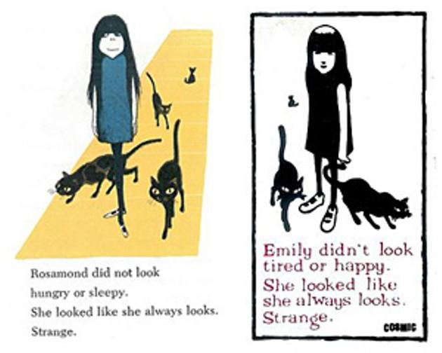

Emily the Strange is an advertising mascot character featured in several books, graphic novels, merchandise and clothing lines. She was created by Rob Reger for his company Cosmic Debris Etc. Inc. located in San Francisco, California. Cosmic Debris has opened four Emily the Strange flagship stores to date (Taiwan, Taipei, Hong Kong and Greece), with plans to open Emily the Strange retail stores in the Americas in the next years.
The very first Emily the Strange illustration dates from 1991, on Santa Cruz Skateboards professional skater Ross Goodman's skateboard graphics. Nathan Carrico, graphic artist and creative director, designed Emily in 1991 for Santa Cruz Skateboards in Santa Cruz, California.
The 1978 children's book Nate the Great and the Lost List features a very similar illustration of a young girl named Rosamond. She also has long black hair and is frequently accompanied by her black cats. When Rosamond is introduced she wears a short dress and white Mary Jane shoes, similar to Emily, and in a similar pose.

When Rosamond's creators, Marjorie Sharmat and Marc Simont, allegedly began contacting companies who had contracts related to Emily the Strange and urged them to drop their relationships with Cosmic Debris, Cosmic Debris sued Sharmat and Simont. Sharmat and Simont counter-sued.
Cosmic Debris contended that Emily and Rosamond both drew from a tradition of similar characters including Vampira and Wednesday Addams, and argued that while the text of the initial Emily illustration was nearly identical with Sharmat's text, that illustration had been withdrawn in 1998 and the statute of limitations had therefore run out.
On August 12, 2009, creator of Emily the Strange and the creators of Nate the Great jointly announced an agreement resolving all disputes between them. Each side agreed to give up all claims against the other as part of their settlement. "We recognize that Emily and Rosamond are both unique and original characters, and we are pleased that we were able to resolve this dispute," said Marjorie Sharmat and Marc Simont. "We wish Rob, Cosmic Debris, Emily and her fans all the very best."
The Emily the Strange franchise has a considerable merchandising catalog, including clothing, stationery, stickers and fashion accessories. All of the products feature Emily's distinctive appearance and frequently feature one of her cynical sayings such as "Get Lost," "Be All You Can't Be," or "Wish You Weren't Here".
In 2005, the company partnered with British punk rock band The Damned, in the release and artwork for their single Little Miss Disaster. Other co-branding alliances and partnerships have included Jones Soda, Gibson Guitars and Manic Panic (hair coloring, nail polishes and colorful extensions).
For more than ten years, pop culture cultists have revered and adored a mysterious, brooding thirteen-year-old girl named Emily the Strange. Nobody knows much about the young girl with a porcelain face and huge eyes framed by black bangs, and her ever- present brood of black cats only adds to the intrigue, but that hasn't stopped a generation of rabid fans from letting Emily put her spell upon them.
Now, for the first time ever, Emily fans will be welcomed into her dark and, well, strange world, a place where kitty friends talk, the ghosts of famous weirdos come out to play, reality is never quite what it seems, and above all, a place where anyone who's ever been considered a little "strange" themselves will be made to feel right at home.
Dark Horse Comics and the creative minds behind Cosmic Debris are thrilled to present the first-ever Emily comic books, published as deluxe single issues with all-new stories and art. Each issue of Emily comics will feature 48 pages of black, white, and red art (with the occasional outburst of full-color freakouts!), illustrating a wacky range of Emily stories.